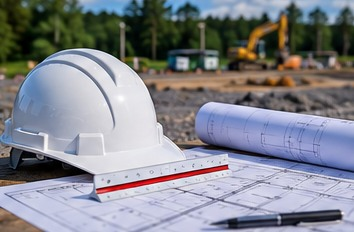
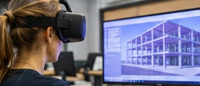
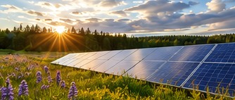
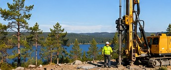

Läsperiod 1–2
Verktyg för byggkalkyler och rapporter
K00015B
Kommer senare
Här hittar du studiematerial för kurser som ingår i utbildningen. Sidan byggs på allt eftersom mer material tas fram.
Kurser som läses just nu

Fler kursrum öppnas när material finns tillgängligt


